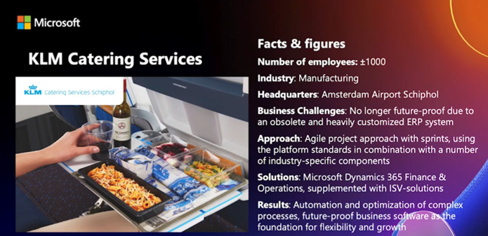
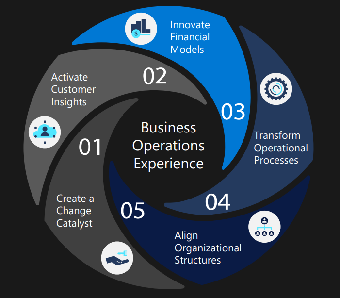

Op 22 november 2021 om 14u heeft Microsoft een evenement georganiseerd. Dit evenement heette "Microsoft Envision Europe: The Role of Finance Leaders in Digital Transformation" en heeft 1u geduurd. In totaal waren er 3 spekers aanwezig.
De eerste spreker is Annona Loughnane: CFO, EMEA Global Sales, Marketing and operations Microsoft. Ze zijn een organisatie die een diepe kennis heeft over de business strategie en werken samen met business leiders om de beste performantie te bekomen. Ontdekking van grote groei opportuniteiten in de markten is heel belangrijk. De enige manier die zij vindt dat finance kan groeien is door het gebruik van data. Hiermee kunnen ze zien waar ze meer resources in moeten steken en of het wel waard is.
De tweede spreker is Martin Cederbom. Hij is industry manager van Automative Fellowmind. Het is een snelgroeiend bedrijf en is een partner van Microsoft. Ze zijn actief in 6 landen, hebben 35 kantoren en een omzet van 240 miljoen euro. Toen covid gebeurde was dit een perfect moment om te adapteren naar digitale werkingen. Er was veel onzekerheid bij zowel klanten als bedrijven. Alles veranderde van fysiek naar digitaal. Fellowmind hielp hierbij om software toegankelijk te maken om vanuit thuis te werken en om de migratie naar de cloud makkelijk te maken, omdat dit beter is voor de business.
Klanten ervaarden een ransomware attack, waarbij 365 het enige platform was die op voeten bleef. De nood aan de cloud is er nog steeds, maar wordt vaak onderschat want velen zijn nog on-prem.
De derde spreker is Teresa Ventura. Haar functie is Dynamics 365 Finance & Operations Lead. Teresa zal het hebben over hoe je financiële en operationele modellen kan optimaliseren.
Er zijn 5 strategieën om dit te bekomen. De eerste strategie is "Create a change catalyst". Dit zorgt ervoor dat het werk meer betekenisvoller is. Het schetst een plan van continue optimisaties van business operatie ervaringen. Hierbij hoort dus hoe de markten gebruikt worden, financiële operaties and klanteninzicht. Dit kan je bekomen door een digitale transformatie leider aan te wijzen en cross-functioniële teams vormen.
De 2de strategie is "Activate customer insights". De vraag naar de digitale schakelingen stijgt, maar dit zal onsuccesvol zijn als er geen kennis is van wat het doelpubliek en klanten zullen zijn. Een real time customer data platform zal de beste resultaten leveren, samen met gedrags en demografische data. Hiermee kan je de business operaties ervaringen optimaliseren.
"Innovate financial models", is de 3de strategie. Momenteel proberen organisaties om de markten te verstoren, zoals de non traditionele digitale, subscriptie, project and service gebaseerde financiële models. De meeste CFO's inveseteren nu in finance first innovation. Hiermee maken ze beslissingen om wendbaarheid en groei in real time financiële reporting te bekomen.
De voorlaatste strategie is "Transform operational processes". De introductie van terugkerende inkomsten business modellen hebben de connecties met de verschillende industrieën beschadigt. Hierdoor is het moeilijker om te identificeren op welke gronden je competitie hebt. De oplossing is om op nieuwe manier te engageren met klanten. Dit vereist een verandering in de operationele en organisatorische constructies.
De laatste strategie is "Align organizational structures". Voor de klantenservice en sales teams zijn hr leaders aan het kijken om een werkplaats te creeëren waarbij ze streven naar tevreden werknemers en sfeer. Hierdoor zal er een hogere werkkracht zijn. Dit zullen ze bekomen door HR-oplossingen te gebruiken met de huidige systemen en zullen betere beslisingen maken d.m.v gebruik te maken van gecentraliseerde data.
Ik vond dit een goede seminar, er zat genoeg variatie in tussen de verschillende sprekers. Heel goed georganiseerd ook en op het einde was er een vragenronde van 15 minuten.